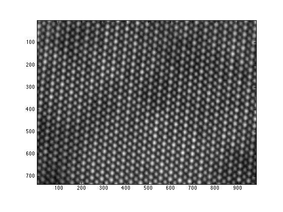
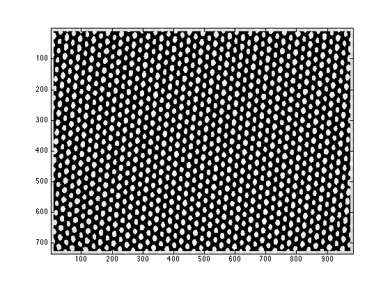
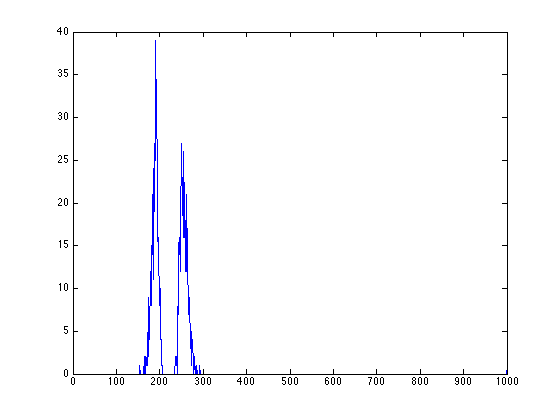
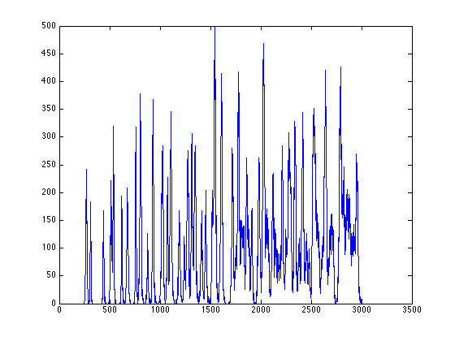
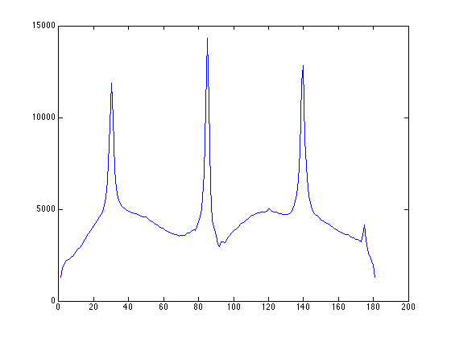
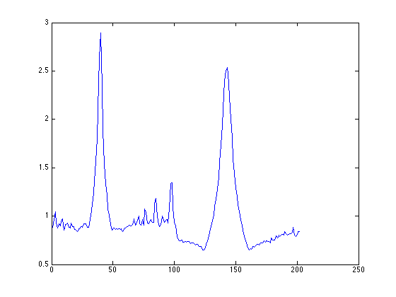
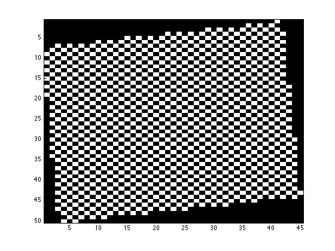

Contents
- load the RevSTEM image. The gray-scale image is loaded to the variable 'ImageSum_R'
- display the RevSTEM image
- find the atom column locations using normalized cross correlation data
- find the atom column locations using experimental RevSTEM data
- distance histogram calculated from the fitting result
- calculate PSD for the example image
- we can then use the point-PSD to find exactly locations of peaks at roughly 85 degrees and -5 degrees (175 degrees in the plot)
- note the output from matlab says 'find image aligned a long xxx degree at index yyy', use the index yyy to plot the projected profile
- the matrix representation is stored in 'mini_E'
load the RevSTEM image. The gray-scale image is loaded to the variable 'ImageSum_R'
the RevSTEM image has not been filtered note that our code can also work on regular STEM images the 'serReader.m' script can be used to read a converntiaonl STEM image acquired by TIA
load example.mat
display the RevSTEM image
figure;
imagesc(ImageSum_R);
axis image;
colormap(gray);
 find the atom column locations using normalized cross correlation data
function [fitresult,oimage,zfit, fiterr, zerr, resnorm,... rr,image1,image2,object_index,mass_center,C,D,StartPoint,h_area]=... find_atomic_columns(raw_image,sigma,threshold,max_peak_num,sign,style,... area_threshold,initial_values,fit_shift,verbose);
% the main output 'fitresult_N' has a cell structure, % each cell is a 1x7 array [amp, ang, sx, sy, xo, yo, zo] containing the peak fitting result % amp: amplitude % ang: rotation angle of the two main axes % sx: sigma along the first main axis % sy: sigma along the second main axis % xo: x coordinate of the peak center % yo: y coordinate of the peak center % zo: background intensity % Meaning of inputs of 'find_atom_clolumns' % raw_image: The input STEM image % sigma: sigma of the gaussian distribution for normalized cross-correlation, % when the number is 0, the program decides the best sigma for ncc % threshold: threshold to separate the atom columns % max_peak_num: the limit of peak numbers % sign: 1: find the peaks; 2: find the valleys (for ABF) % style: 1: use ncc data to fit the peak; 2: use experimental data % area_threshold: only areas within the area_threshold range are used for fitting % initial_values: starting values for peak fitting, can be set as 0 % fit_shift: for future use, 0 % verbose: show the ncc threshold map and area size histogram [fitresult_N,oimage,zfit, fiterr, zerr, resnorm, rr,image1,image2,object_index,mass_center_N]=... find_atomic_columns(ImageSum_R,0,0.1,6000,1,1,[100 400],0,0,1);
gaussian template sigma=8 total peaks found: 974 areas range from 154 to 37563 peaks with areas larger than 10 pixels: 974 peaks with areas larger than 20 pixels: 974 
find the atom column locations using experimental RevSTEM data
style is set to 2 to use experimental data for fitting starting points are set to be fitresult_N
[fitresult_E,oimage_E,zfit_E, fiterr_E, zerr_E, resnorm_E, rr_E,image1_E,image2_E,startpoint_E,mass_center_E]=...
find_atomic_columns(ImageSum_R,0,0.1,6000,1,2,[100 400],fitresult_N,0,0);
gaussian template sigma=8 total peaks found: 974 areas range from 154 to 37563 peaks with areas larger than 10 pixels: 974 peaks with areas larger than 20 pixels: 974
distance histogram calculated from the fitting result
figure; [xydist_E,h_E]=position_analysis(fitresult_E,ImageSum_R,300,30); plot(h_E);
calculate PSD for the example image
figure; [Iproj,Iavg,Istd]=project_image_RD(ImageSum_R,100,-90:1:90); plot(Istd);
Elapsed time is 5.352220 seconds.
we can then use the point-PSD to find exactly locations of peaks at roughly 85 degrees and -5 degrees (175 degrees in the plot)
figure;
[d_E,proj_acc_E,projx_E,peak_index_E,row_map_E,col_map_E,mini_E,row_stat_E,col_stat_E,coord_angle_E]...
=assign_xy_to_peaks(ImageSum_R,fitresult_E,200,-5,85,1,1);
plot(projx_E);
find image aligned along -6.100000 degree at index 40 find image aligned along 84.100000 degree at index 143
note the output from matlab says 'find image aligned a long xxx degree at index yyy', use the index yyy to plot the projected profile
figure; subplot(2,1,1); plot(proj_acc_E(40,:)); subplot(2,1,2); plot(proj_acc_E(143,:));

the matrix representation is stored in 'mini_E'
mini_E is a 2D matrix with each node containing the index of the peak fitting result in fitresult_R
figure; imagesc(mini_E>0); daspect([1 sqrt(2) 1]); colormap(gray);